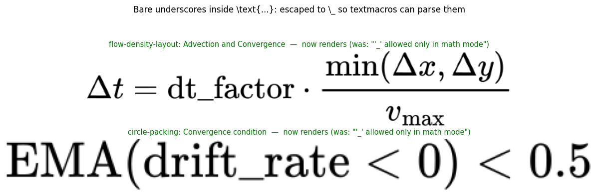
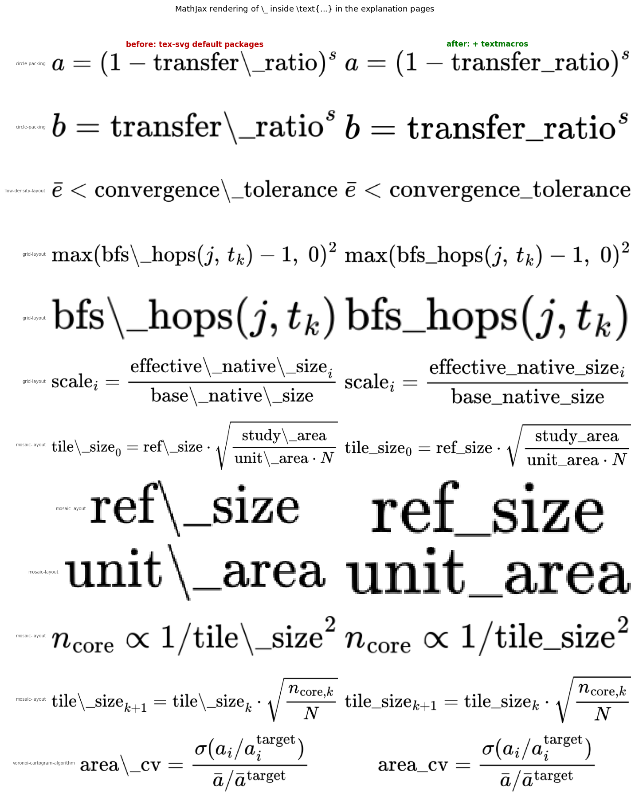
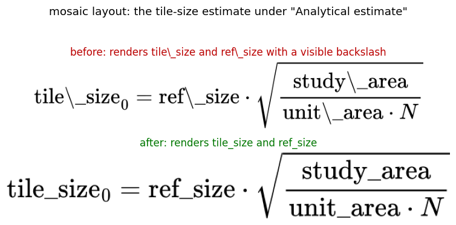

Twelve equations across five explanation pages rendered option names with a visible backslash - "tile\_size" instead of "tile_size". The bundled tex-svg build omits the textmacros extension, without which the body of \text{...} is taken verbatim. One config line fixes all of them; no equation source changes.
docs/javascripts/mathjax-config.js configured MathJax but never loaded the textmacros extension, and the tex-svg.js CDN build does not bundle it. Its default package set is base, ams, newcommand, noundefined, configmacros, require and autoload.
Without textmacros, the body of \text{...} is taken verbatim, so the \_ in \text{tile\_size} typesets as two glyphs - a backslash and an underscore - rather than as one underscore. In ordinary math mode \_ is defined by base and works, which is why only identifiers wrapped in \text{...} are affected.
The source markup was correct throughout. \_ is the right way to write a literal underscore inside \text{...}, and every one of the 12 occurrences is an identifier name - transfer_ratio, bfs_hops, convergence_tolerance, tile_size, area_cv - not a subscript.
Four candidates were rendered through mathjax-full at the site's package set:
| candidate | result |
|---|---|
\text{tile\_size} (current source), default packages | tile\_size - the bug |
\text{tile\_size} **+ textmacros** | tile_size - correct |
\text{tile_size} (drop the backslash) | **TeX error**, renders nothing |
\texttt{tile\_size} | tile\_size - still wrong, \texttt is also text mode |
\mathrm{tile\_size} | tile_size - correct, but needs 12 source edits |
Loading textmacros fixes all 12 with one config change and leaves the markup alone. Dropping the backslash - the obvious reading of "these should be underscores" - is the one option that makes things strictly worse: inside \text{...} a bare _ is a syntax error, so those equations would stop rendering entirely.
\_ appears 43 times in docs/explanations/. Only the 19 inside \text{...} in math were mis-rendering, spread over the 12 equations above. The other 24 are Markdown escapes in prose and link text - layouts/flow/\_\_init\_\_.py, go\_cart - which render as plain underscores and are untouched.
A search across every .md and .ipynb under docs/ for the shape an intended subscript would take - \_ followed by a single character, as in a\_i for a subscript i - returns nothing. No equation in the documentation wanted a subscript here.
Loading textmacros makes \text{...} parse its body as real text mode instead of taking it verbatim. That is the point of the extension, but it also means a *bare* underscore inside \text{...} stops being harmless and becomes a TeX error, '_' allowed only in math mode. Two equations had one:
| file | equation |
|---|---|
symbol-cartogram-flow-density-layout.md:66 | \Delta t = \text{dt_factor} \cdot \ldots |
symbol-cartogram-circle-packing.md:389 | \text{EMA}(\text{drift_rate} < 0) < 0.5 |
Before the extension these two looked correct and the other twelve looked broken, because verbatim mode prints whatever it is given. Escaping both to \_ makes all fourteen consistent, and the escaped form renders correctly with or without textmacros, so the source is right independently of the config.
Both were found by scanning for the pattern rather than by waiting for reports: one had been reported, the scan found the second before it was.
docs/ - 336 of them across 16 files - rendered throughmathjax-full 3 at the site's package set. Results:
| config | source | outcome |
|---|---|---|
| no textmacros | original | 0 errors, but 12 equations display \_ |
| textmacros | original | **2 errors** - the regression above |
| textmacros | fixed | **0 errors, 0 mis-rendered** |
| no textmacros | fixed | 0 errors - the source fix is backward compatible |
mathjax-full 3 with the exactpackage set tex-svg.js ships, before and after. The figures above are those renders, not mockups.
https://cdn.jsdelivr.net/npm/mathjax@3/es5/input/tex/extensions/textmacros.jsreturns 200 (16 KB), so the loader path resolves against the same CDN that already serves tex-svg.js.
make check clean.inlineMath still lists ['$','$'] and displayMath ['$$','$$'], but pymdownx.arithmatex runs in generic: true mode and has already rewritten every $...$ into \(...\) before MathJax sees the page. Leaving the dollar delimiters active means a literal $ in prose can open a spurious math region. Nothing in the current documentation triggers it, and it is unrelated to this bug, so it is left alone rather than folded into a rendering fix.

The two equations that had a *bare* underscore inside \text{...}. Loading textmacros turned those from harmless into a TeX error, and escaping them to \_ fixes both. Shown after the fix; before it, each rendered as the red message "'_' allowed only in math mode".

Every affected equation, rendered both ways. Left column is the site's current package set, right column is the same set plus textmacros. Twelve equations across circle-packing, flow-density-layout, grid-layout, mosaic-layout and voronoi-cartogram-algorithm.

The equation this was reported against, under "Analytical estimate" in the mosaic layout page. Before: "tile\_size" and "ref\_size" with a visible backslash. After: "tile_size" and "ref_size".